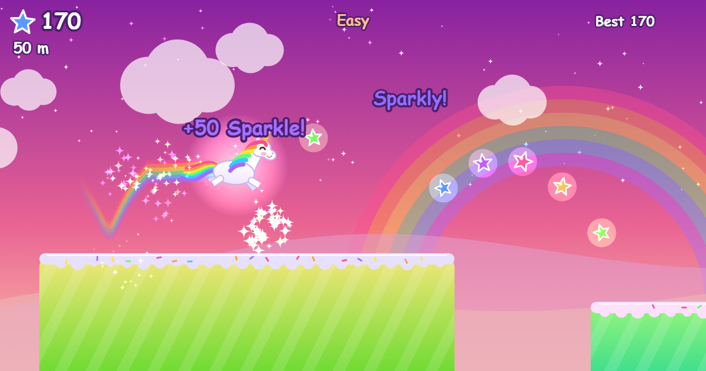
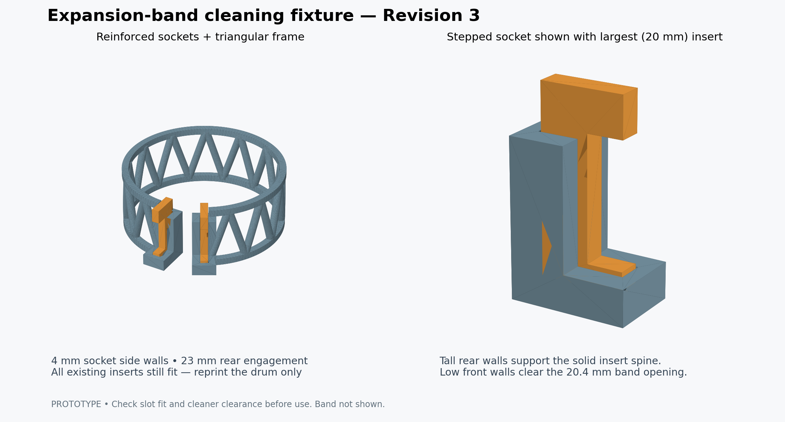
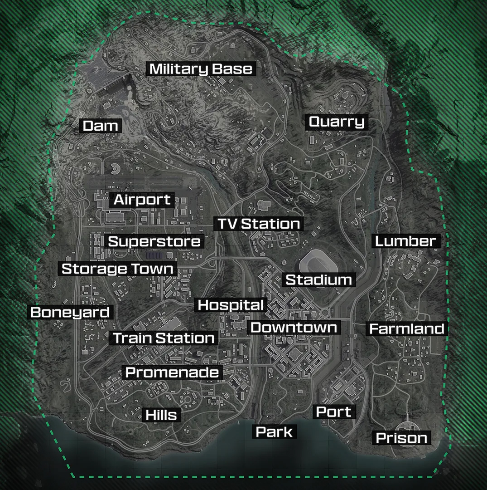

My Projects

Rainbow Unicorn Dash
A sparkly, gentle runner game for little kids. Jump, double jump, and dash a rainbow unicorn through candy platforms, stars, and crystals. Easy mode never ends, so there's no losing! Works on phones too.
Play the Game
3D Models
Explore printable watch tools and HO-scale buildings. See model previews, read printing notes, and download the STL, 3MF, and editable source files.
Explore 3D Models My Printables profile ↗Face Country Guessing Game
Test your knowledge of facial characteristics across different countries. Can you guess which country a person is from based on their appearance?
Play the Game
Warzone Drop Selector
Can't decide where to drop in Verdansk 2025? Let this tool decide for you! No more indecision - just click and drop where fate takes you.
Choose Drop Point
Civil War Field Companion
A searchable visual companion to The Civil War & Reconstruction podcast, with episode maps, timelines, people, command structures, battlefield images, and source links.
Explore the Companion